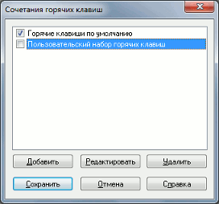
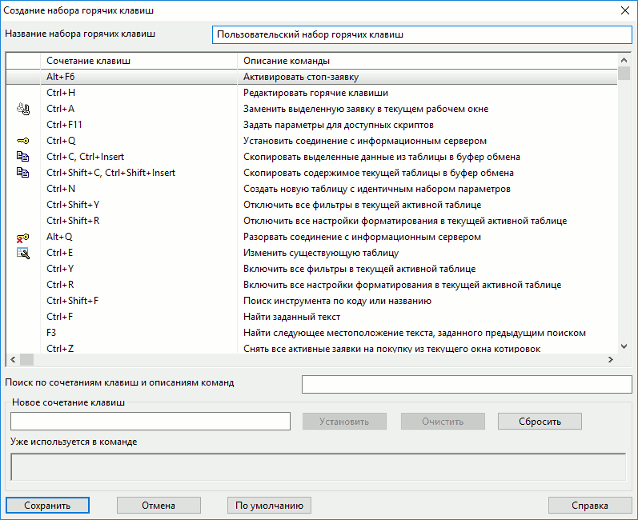

меню Система / Настройки / Редактор горячих клавиш...
Сочетания «горячих клавиш», используемых для обращения к функциям программы с клавиатуры, могут быть изменены при помощи Редактора
горячих клавиш. Предусмотрена возможность создания нескольких пользовательских наборов команд. При этом можно восстановить первоначальные настройки, выбрав набор «Горячие клавиши по умолчанию». Окно «Сочетания горячих клавиш» можно открыть нажатием клавиш «Ctrl»+«H».  По умолчанию в Рабочем месте QUIK применяются сочетания «горячих клавиш»,
перечень которых приведен в Приложении. Набор
«Горячие клавиши по умолчанию» недоступен для редактирования. Чтобы открыть его
для просмотра, дважды нажмите левую кнопку мыши на строке с его названием. Для изменения сочетания клавиш необходимо создать новый пользовательский
набор клавиш, в котором производить необходимые изменения. Действия с набором клавиш выполняются нажатием на кнопки в нижней части
окна: Выбранный для использования набор клавиш отмечается в списке
символом . При нажатии кнопки «Сохранить» все
комбинации горячих клавиш заменяются настройками из выбранного пользовательского
набора. Окно создания / редактирования пользовательского набора горячих клавиш вызывается
нажатием кнопки «Создать» / «Редактировать» в окне «Сочетания горячих клавиш».  Окно содержит следующие настройки: В таблице перечислены все доступные в Рабочем месте
команды. Перечень сочетаний клавиш, используемых по умолчанию, приведен в п.
«Список управляющих клавиш». Пользователь может задать новое сочетание клавиш для любой команды, а также назначить сочетания клавиш для тех команд, для которых они не были назначены по умолчанию.Наборы горячих клавиш
Редактирование набора горячих клавиш
При нажатии кнопки «Сохранить» изменения вступают в силу. Нажатием кнопки «Отмена» окно закрывается без сохранения изменений. Для сброса изменений и возвращения стандартных настроек клавиш нажмите кнопку «По умолчанию».